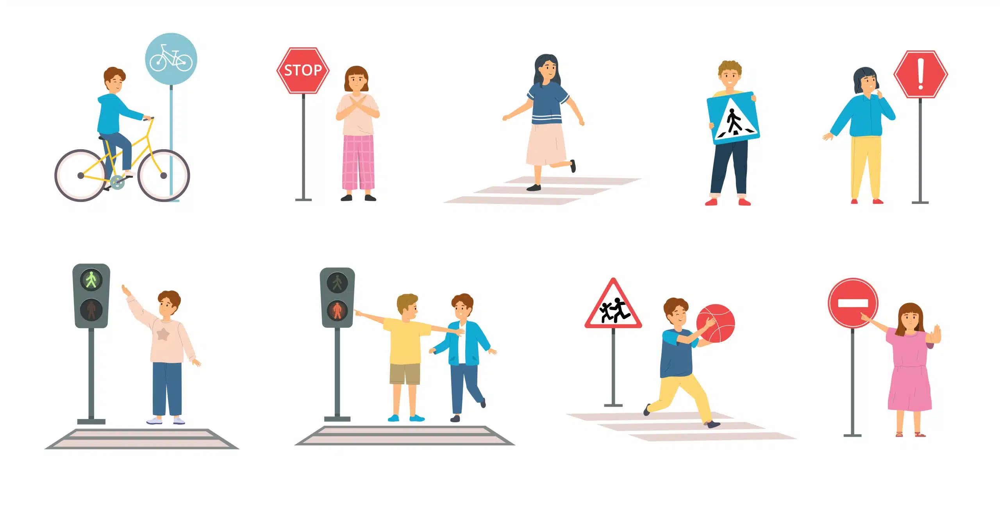
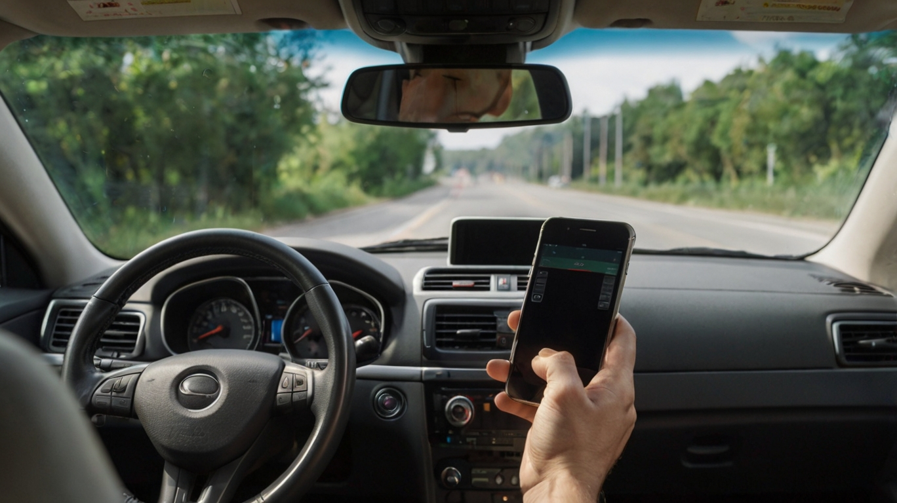
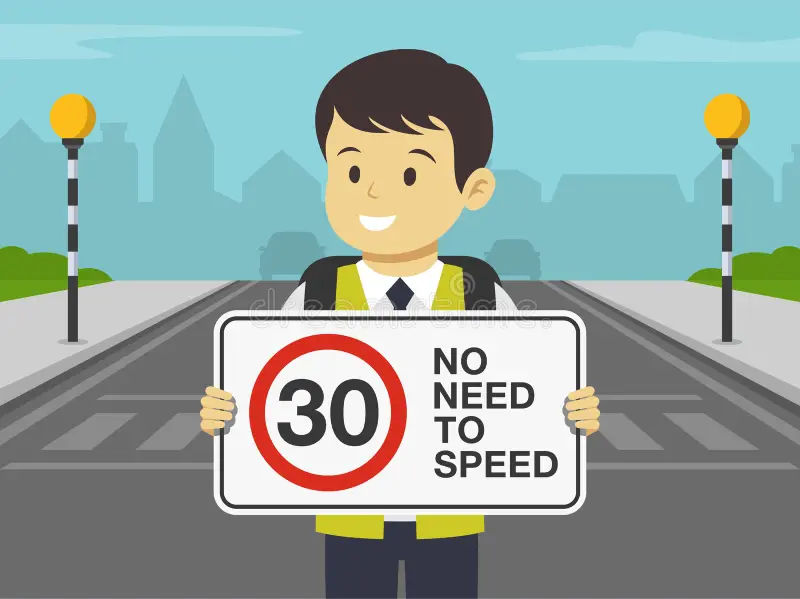

1. What Happens If You Don't Follow Road Safety?
When road safety rules are ignored, the consequences can be dire. Speeding, distracted driving, or not wearing a seatbelt are among the leading causes of accidents. These actions endanger not only your life but also the lives of others on the road.

2. How to Behave on the Road?
Road safety requires attention and respect for others. Always signal before changing lanes, avoid distractions like texting, and keep a safe distance from other vehicles. Remember, your good behavior on the road can save lives.

3. Simple Tips for Road Safety
Tip 1: Always Wear a Seatbelt
Wearing a seatbelt reduces the chances of serious injury during an accident. Always make it a habit, no matter how short the trip.
Tip 2: Avoid Distractions
Stay focused on the road. Avoid texting, talking on the phone, or using in-car technology while driving. Pull over safely if you need to make a call.

Tip 3: Follow Speed Limits
Speed limits are designed for your safety. Driving too fast reduces your ability to react to sudden changes in the road or weather conditions.
